OptiPlant Tool: Files
Overview
General File Structure Explanation
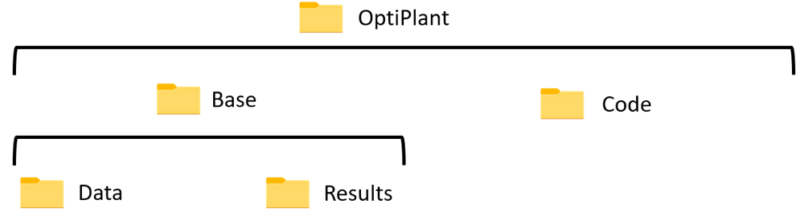
Figure 15: Overall folder structure after extracting the OptiPlant-master ZIPMain folders:
- BASE: Contains Data and Results (not code-related)
- RUN CODE: Contains the Julia scripts to import data, define scenarios, and run the optimization model
Project Organization
BASE/Data:
- Inputs (Excel files with plant units, techno-economic data, scenarios)
- Profiles (Excel files with wind/solar profiles and electricity prices by year)
BASE/Results:
- A separate results folder is created per simulation run; folder name set in Inputs → ScenariosToRun
- Each results folder contains subfolders "Data used", "Hourly results", and "Main results"
RUN CODE:
- ImportData.jl, ImportScenarios.jl, Main.jl
Main Directories Purpose
- RUN CODE: Core execution scripts and optimization model
- BASE/Data: All input data and profiles used by the model
- BASE/Results: Outputs produced by model runs, plus a "Results" Excel file for visualization
Run Code Folder
Contents and Purpose
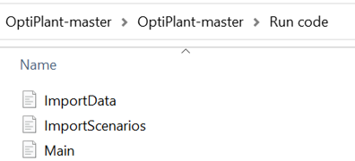
Figure 35: RUN CODE folder contents (three scripts)- ImportData.jl: Imports into Julia the necessary input data (units, techno-economics, power profiles)
- ImportScenarios.jl: Imports information regarding the scenario conditions of the study
- Main.jl: The optimization model; uses imported data and extracts outputs
Main Execution Files
Main.jl is the primary file to run the optimization under most cases.
How to Run the Model
- Open Main.jl (Run Code folder) in VS Code
- Set the solver on line 4 to "HiGHS" or "Gurobi" (you may customize solver)
Figure 36: Screenshot showing solver selection (line 4)
- Set directories on lines 22–25: OptiPlant directory, input data Excel file name, input data Excel sheet name, and the folder name inside "Results" where outputs will be saved
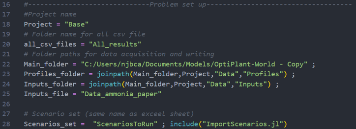
Figure 37: Screenshot showing directories (lines 22–25) fields in Main.jl- Edit code if necessary; run the file
Configuration Options
- Solver selection (HiGHS or Gurobi)
- Paths configuration to inputs and outputs
- If you create a new scenarios sheet in the Inputs Excel, ensure Main.jl references it correctly (e.g., line 28)
Base Folder: Data
Input Data Structure
Inputs subfolder (Excel workbooks; example: "Inputdataexample")
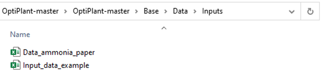
Figure 16: Inputs folderStandard sheets inside an Inputs Excel:
Databasecase Sheet
 Figure 17: Databasecase sheet with highlighted default yearly demands (red box)
Figure 17: Databasecase sheet with highlighted default yearly demands (red box)
List of possible units (non-electrical and electrical) and characteristics (production rates, heat/electrical flows, load ranges, ramp constraints, CapEx, OpEx, etc.). Red box indicates default yearly demands of each fuel (main model drivers).
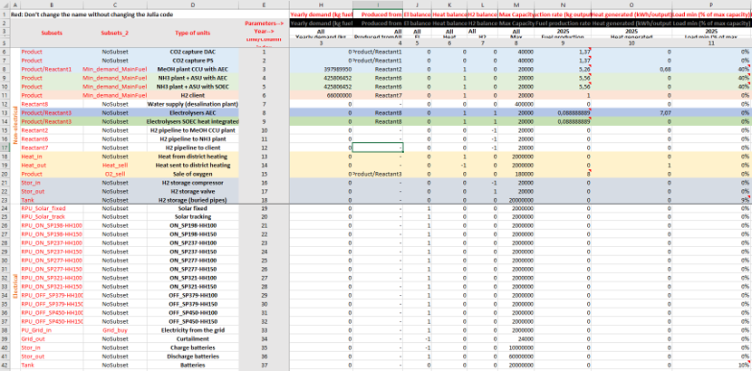
Figure 18: Many parameters with units and sourcesSelected_units Sheet
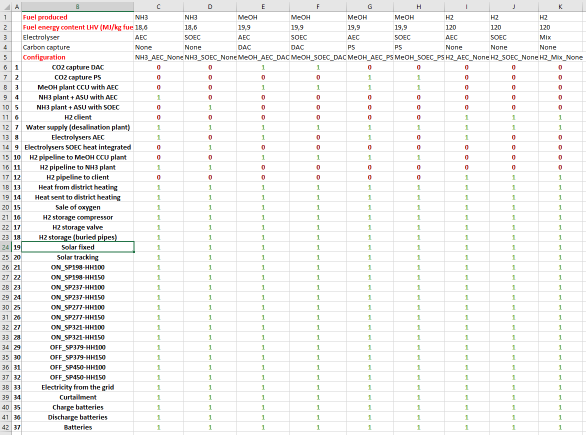
Figure 19: Selected_units sheet (1/0 selections)1/0 matrix indicating which units/technologies are included per fuel production process (e.g., NH3, H2, MeOH).
Scenarios_definition Sheet
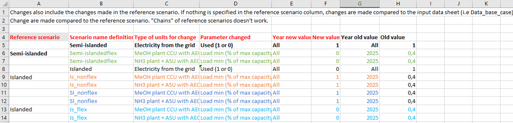
Figure 20: Scenarios_definition sheet (intermediate logic)Defines operating strategy and conditions; logic sits between Databasecase/Selected_units and outputs; useful for sensitivity analysis.
ScenariosToRun Sheet
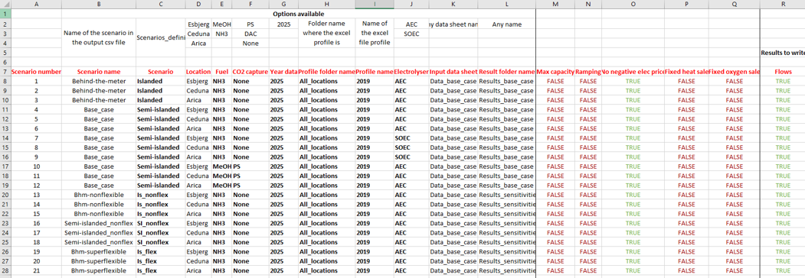
Figure 21: ScenariosToRun sheet (scenario list and parameters)Lists the scenarios to run (operating strategy, location wind/solar, year, produced fuel, electrolyzer technology, etc.). The model stores results as CSV in a folder named per this sheet.
Sources Sheet
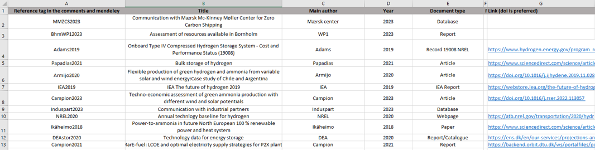
Figure 22: Sources sheet (data references)References/sources for Databasecase entries; should be updated if you change/add input data.
File Formats Used
Excel (.xlsx) for Inputs and Profiles.
How to Prepare Input Data
- Update Databasecase only if necessary; units and sources are indicated for parameters
- In Selected_units, set 1/0 according to preference (default represents "standard case"). Prefer working on a copy or keep track of changes
- In Scenarios_definition, adjust scenario logic relative to inputs for sensitivity analysis
- In ScenariosToRun, carefully type names that must match other sheets; if you create a new sheet per study case, ensure the sheet name is updated in Main.jl (e.g., line 28)
- Maintain Sources sheet if inputs are changed
Data Requirements and Specifications
Profiles subfolder (e.g., "2019.xlsx") has:
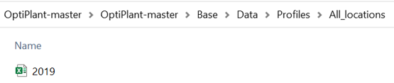
Figure 23: Profiles folderFigure 24: 2019 workbook
Flux Sheet
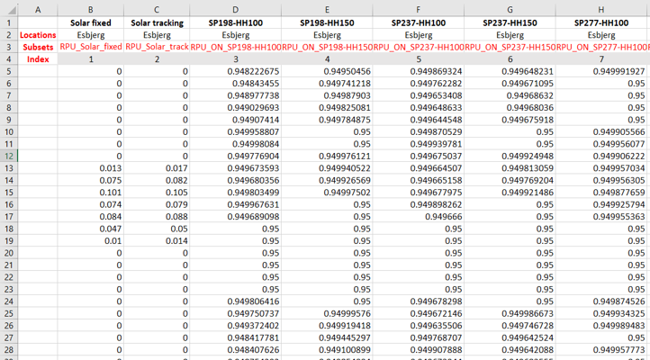
Figure 25: Flux sheet (normalized wind/solar power profiles)Hourly solar and wind profiles (normalized generator output) for various technologies and locations in the specified year.
Price Sheet
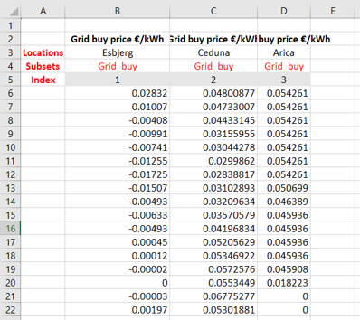
Figure 26: Price sheet (hourly electricity prices)Hourly grid buy price for the specified year at different locations.
Profile sources:
- Wind profiles from CorRES tool
- Solar profiles from renewable.ninja website
Units: Non-electrical vs electrical units are distinguished in inputs.
Base Folder: Results
Output File Structure
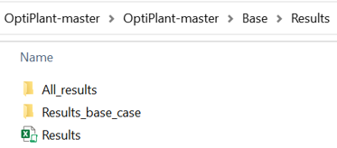
Figure 27: Results folder structureBASE/Results contains a "Results" Excel file and subfolders per run (e.g., "Resultsbasecase").
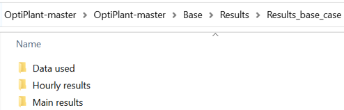
Figure 28: Example of subfolders ("Data used", "Hourly results", "Main results")Each run folder contains:
- Data used (CSV)
- Hourly results (CSV)
- Main results (CSV)
Results Interpretation
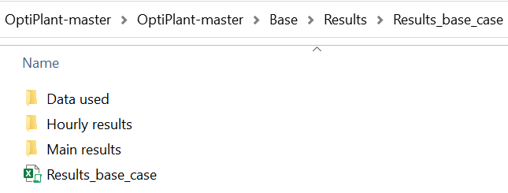
Figure 29: Results Excel fileUse the "Results" Excel file (make a copy and place it into the corresponding run's results folder).
Figure 30: Placement within the run folder
Import Sheet
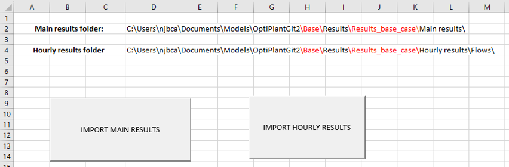
Figure 31: Import sheet showing directories and macro buttonsIn the "Import" sheet, set correct directories for "Main results folder" and "Hourly results folder" (paths should end with "\") and run macros to import.
Analysis Sheets
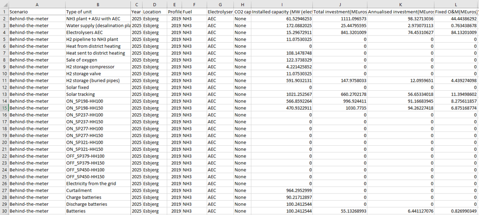
Figure 32: "All_scenarios" sheet displaying outputs per unit and scenarioView scenario outputs in sheets named after scenarios (as in Inputs). "All_scenarios" shows output values for each unit and scenario.
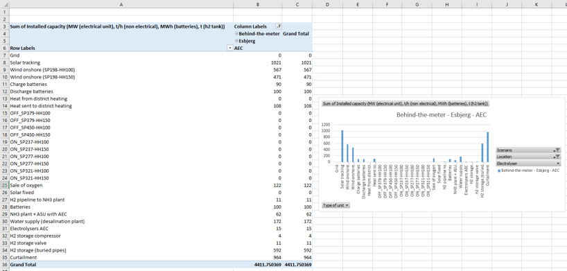
Figure 33: Example Pivot Table/chart (e.g., production, consumption, cost, capacities)Other sheets (e.g., "Elec production", "Electricity consumption", "Production cost", "Cost breakdown", "Installed capacities") provide breakdowns and allow plotting via Pivot Tables. Refresh pivots after importing new results.
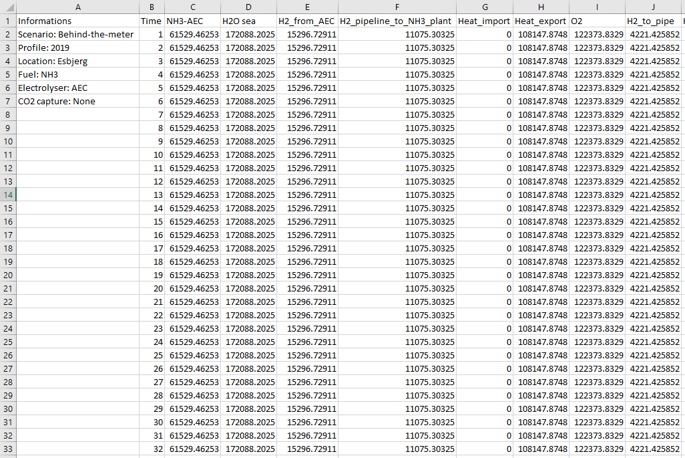
Figure 34: Example hourly results sheet with time-series flowsAdditional sheets appear when hourly results are imported; each corresponds to a run scenario with hourly flows for different parameters.
Units for Outputs
- Non-electrical units: t/h (tonnes per hour)
- Electrical units: MW
- Hourly flow sheets: values are x/1000 (kg/h and kW, respectively)
- Mass storage: t (tonnes)
- Electricity storage: MWh
File Formats Generated
CSV files for Data used, Hourly results, and Main results.
Post-processing Options
Use the provided "Results" Excel workbook with macros to import CSVs and Pivot Tables to visualize and analyze results.
Best Practices
- Keep a copy of standard Inputs to revert changes (especially Selected_units)
- Carefully maintain consistent names across Excel sheets (ScenariosToRun, etc.) and Main.jl references
- Activate the Julia environment each session; use "status" to verify packages
- Refresh Excel Pivot Tables after importing new results
Next Steps
- Complete Installation - Set up Julia, VS Code, and packages
- Learn Troubleshooting - Common issues and solutions
- Technical Details - Detailed specifications